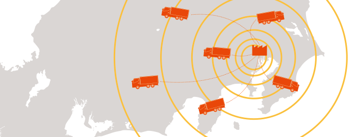

有限会社善速運輸は社会にとって善い速さそれぞれに最適なサービスを提供
善速運輸は長年新聞の輸送に特化して事業を行っております。 日々、「安心・安全に時間を守る事」を心がけて事業を行っております。 従業員一人一人が目標を持ち、常に成長を続けております。 ドライバーへの安全運転指導を行うとともに、低公害車を全車導入し、エコドライブを意識した指導を行っております。 輸送業を続けてきた経験を活かして、お客様のご要望にお応え出来る範囲をさらに広げ、 今まで培ってきたネットワークを基に、新しいサービスを提供します。 ・お客様より新聞輸送業務を承り、各エリアの新聞工場から新聞輸送を行っております。 ・朝刊の輸送、エリアにより夕刊の輸送も担っています。 ・ルート配送により各販売店へ時間厳守のもと、2ｔ車・4ｔ車を用いて配送しています。
